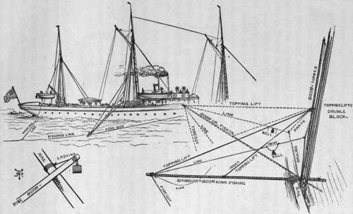

Chapter IX. The Ocean Fishing Rod
Description
This section is from the book "Sea Fishing", by John Bickerdyke. Also available from Amazon: Sea Fishing.
Chapter IX. The Ocean Fishing Rod
A good ship is steadily ploughing her way through that maritime oven known as the Red Sea. Under the shade of the awning passengers in varying degrees of exhaustion are lying in deck chairs. There is a slight breeze, but it follows the vessel and is not felt. A few white clouds now and again pass across and obscure the sun. It is too hot for deck quoits ; too hot for that wearying constitutional ; too hot for talking, or thinking even ; almost too hot for flirtation. Suddenly there is the jangle of a bell, and all these apparently inanimate forms come to life, dart to the side of the ship and stand gazing at the wake of the vessel; that is, all except the poor fellow invalided by Indian fevers and agues, who remains lying listlessly in his deck chair.
Standing out from the ship's side is a huge bamboo pole, forty feet in length, bending double under the weight of a great fish which is splashing and twisting on the surface some sixty yards astern. The captain, who has been dozing in his bunk, is called, and, after the manner of sailors, wakes up in a fraction of a second and turns out. He and the first mate run to a light line fastened to the taffrail, the other end of which is attached to the stout fishing line a few yards below the point of the rod. The rod itself is not touched, for it would require a very Goliath of a man to wield it ; but by clever gearing it rises and falls, playing by its own weight the coryphene which, firmly held by two stout double hooks, is churning the tepid sea. The line is hauled inboard, and, without easing the engines or in the slightest degree slackening speed, the sea monster is brought steadily and carefully alongside. One of the crew stands by, cord in hand. This is passed round the line, fashioned at the end into a running bowline knot, and slipped down on to the fish. A sharp jerk pulls it tight, the noosed creature presently swings in mid air, and is hauled up on deck among the plaudits of the passengers.
A frail, effeminate-looking youngster begins to quote Byron to the black-eyed girl at his side, telling in verse of the changing colours of the dying coryphene, which the licensed poet miscalls dolphin. But this is the third fish and quotation of the kind during the voyage, and he is listened to a trifle impatiently. The fish is carried off, the line is released ; the big double hook, bearing a poor imitation of a flying fish made out of white bunting, is again skimming over the waves far astern, and the passengers relapse into their former state of inanimation.
It is fine sport this, catching tunnies, barracuda, dolphins, bonito, coryphenes, seerfish, and other huge and sometimes ugly members of the fish tribe, maybe weighing 100 lbs. and over. The attempt is often made, but less often successful. Even those who thoroughly know the game fail for days together to bring a fish on board. A big liner is not a fishing boat, and when time is money the owners would be ill pleased if their commanders were to slow the engines when fish were seen playing around the vessel, or stop when some extra huge creature had been hooked. The thing, then, was to devise a tackle which would stand the enormous strain when an animal, weighing perhaps 150 lbs., seizes the bait which is being whizzed through the water at the rate of from nine to fifteen knots an hour. At lower speeds the tackle question is less difficult of solution.
The ever-restless Bay of Biscay is scoured by men known as tunny fishers, who may be seen sailing in quite small vessels with a long bamboo rod projecting on either side. The tackle, which would be perfectly useless on a large steamer, is so arranged that when a tunny takes the bait a little bell rings. The principle has been very cleverly adapted by Captain E. H. Howell, R.N.R., for what I may term 'ocean fishing.' Possibly Captain Howell's description of his gear may not be intelligible to landsmen, but on board ship there should be many among the crew capable of rigging it up from the following directions, which are somewhat similar to those originally communicated by Captain Howell to the 'Field.' When once the idea is grasped that the pull of the fish lifts the rod or boom—the weight of which counterbalances the strain on the line—the description is not so difficult to understand, more particularly with the assistance of the very clear illustration.
First is required a rod or boom, forty to forty-five feet long, composed of spliced he-bamboo, about two inches in diameter at the outer end and about six inches in diameter inboard. (A thirty-foot pine boom would answer the purpose, except from a large passenger vessel, where the quantity of stuff thrown overboard is so great that without a long rod the hooks would be fouled every few minutes.) The boom is supported by two topping lifts, led through a double-tail block made fast to the rigging twenty feet above the rail (if the forty-foot boom is used). The inner topping lift is made fast to about the middle of the boom, just so far distant from the rail as the rail is distant from the double-tailed block.1 The outer topping lift is made fast as near the end of the boom as possible, the foreguy being made fast just outside it. Sometimes it is necessary to have a double foreguy, corresponding to the topping lifts. The hauling ends of both topping lifts are made fast to the rail or to a pin in the rail. The heel of the boom rests on the rail, and is perfectly free, except that it is kept from running inboard by a heel rope rove through it and made fast to the rail.
1 This is important, as it enables the boom to be hauled out of the way right up and down the standing rigging when in port or in bad weather.
THE OCEAN FISHING ROD.
Now comes the working of our ocean fishing rod. First we have to ascertain how far the boom is to project over the water. It should be projected until the strain on the topping lifts (ascertained by lashing a spring balance or 200-lb. weight to their hauling parts) is just 200 lbs. When a pull equal to this weight will lift the boom, the heel lashing should be made fast to the rail, and a mark put on the boom to show how to adjust it on any future occasion. A pine boom may be so heavy that it may be necessary to hang a 56-lb. weight at the thick end of it. Otherwise too much of the boom would have to be inboard to partly balance the projecting portion. The line, which is from forty-five to sixty fathoms long, according to the speed and sea, is rove through a block at the boom end, made fast between the topping lift and the fore guy, and close to both. When the line is paid out the length required, which may be marked on it, the inboard end is made fast to the hauling parts of the topping lift, about eight feet above the rail ; so that when a fish strikes he can never pull more than 200-lb. weight without topping the boom up ; and as the strain becomes less, so the boom goes back in its place again, thus playing the fish until the time comes for hauling him in.
Continue to:
- prev: Sea Fishing From Yachts And Large Fishing Boats. Part 11
- Table of Contents
- next: The Ocean Fishing Rod. Part 2
Tags
fishing, hooks, bait, fishermen, spanish mackerel, mackerel fishing